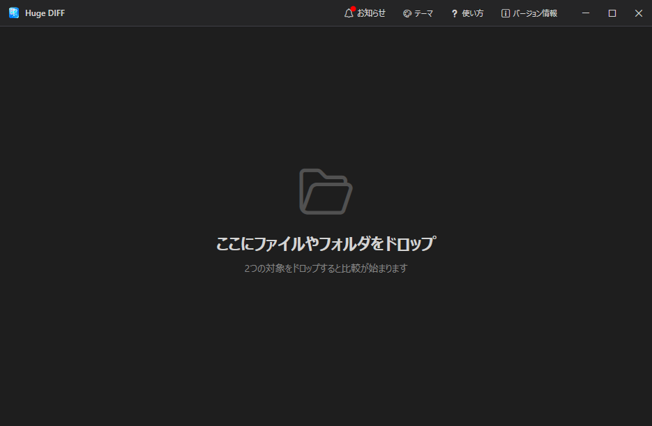
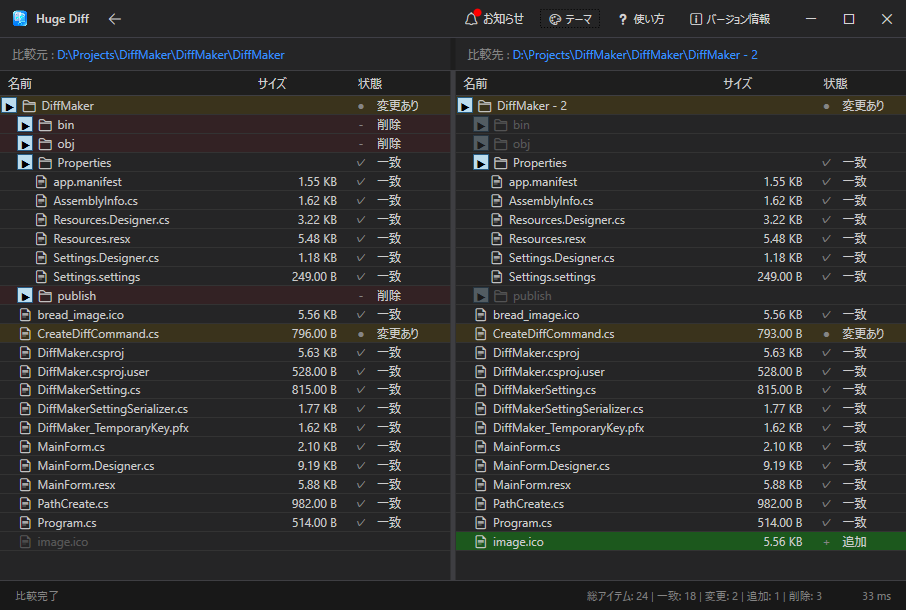
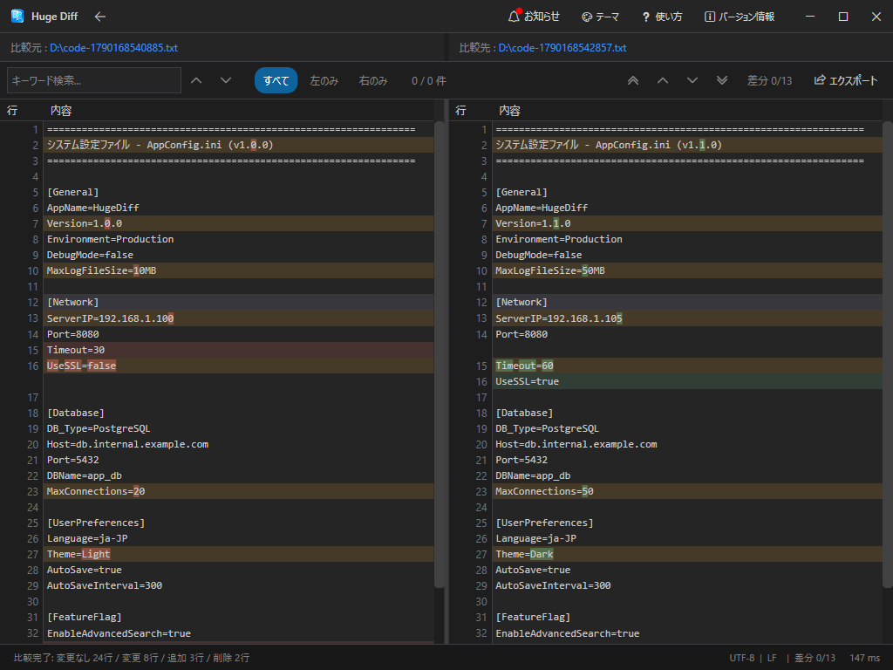
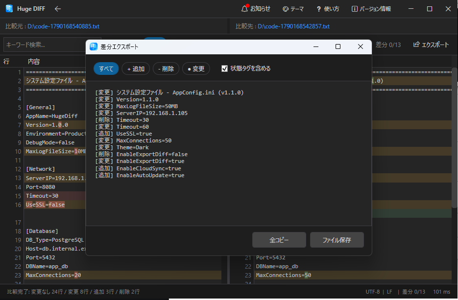

巨大なファイルやフォルダの「違い」を高速で見つける差分比較ツール
HugeDiffを起動したら、比較したい「2つのファイル」または「2つのフォルダ」を画面内にドラッグ＆ドロップしてください。自動的に比較処理がスタートします。

ファイルは1つずつ順番にドロップしても問題ありません。「1つ目のアイテム」をドロップすると、2つ目を待機する画面に切り替わります。
フォルダを比較した場合、ディレクトリ内のファイル一覧が表示され、追加・削除・変更があったファイルが色分けされて一目で分かります。

変更があったファイル（黄色/オレンジのアイコン）をダブルクリックすると、そのままファイル内のテキスト比較画面へ移動できます。
ファイルを比較すると、画面が左右に分割され「どこが書き換わったか」がハイライト表示されます。UI仮想化技術により、100万行クラスの巨大なログファイルでもフリーズせず、滑らかにスクロール可能です。

便利なキーボードショートカット:
テキスト比較画面の右上にある「エクスポート」ボタンを押すと、比較した結果（差分テキスト）を外部へ書き出すことができます。

画面右上のアイコンから、HugeDiffの動作環境をカスタマイズできます。